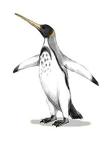
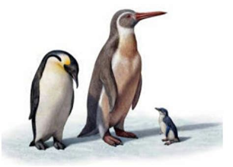
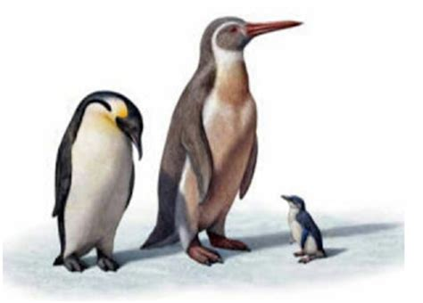

PINGUINOS

La historia evolutiva de los pingüinos está bien investigada y representa un escaparate de la biogeografía evolutiva. Aunque los huesos de pingüino de cualquier especie varían mucho en tamaño y se conocen pocos buenos especímenes, la taxonomía alfa de muchas formas prehistóricas todavía deja mucho que desear. Desde 2005 se han publicado algunos artículos fundamentales sobre la prehistoria de los pingüinos;la evolución de los géneros vivos puede considerarse resuelta a estas alturas.

Los pingüinos basales vivieron alrededor de la época del evento de extinción del Cretácico-Paleógeno en algún lugar del área general de (sur) Nueva Zelanda y la Tierra Byrd, Antártida. Debido a la tectónica de placas, estas áreas estaban en ese momento a menos de 1.500 kilómetros (930 millas) de distancia en lugar de los 4.000 kilómetros (2.500 millas) de hoy. El ancestro común más reciente de los pingüinos y su clado hermano se puede fechar aproximadamente en el límite de Campaniano-Maastrichtiano, alrededor de 70-68 millones de años.
Lo que se puede decir con la mayor certeza posible en ausencia de evidencia directa (es decir, fósil) es que, a fines del Cretácico, el linaje de los pingüinos debió ser evolutivamente bien distinto, aunque mucho menos morfológicamente; Es bastante probable que todavía no estuvieran completamente inertes en ese momento, ya que las aves no voladoras generalmente tienen poca resistencia a la ruptura de las redes tróficas que sigue a la fase inicial de extinciones masivas debido a sus capacidades de dispersión por debajo del promedio (ver también Cormorán no volador)
La historia evolutiva de los pingüinos está bien investigada y representa un escaparate de la biogeografía evolutiva. Aunque los huesos de pingüino de cualquier especie varían mucho en tamaño y se conocen pocos buenos especímenes, la taxonomía alfa de muchas formas prehistóricas todavía deja mucho que desear. Desde 2005 se han publicado algunos artículos fundamentales sobre la prehistoria de los pingüinos;la evolución de los géneros vivos puede considerarse resuelta a estas alturas.

Los pingüinos basales vivieron alrededor de la época del evento de extinción del Cretácico-Paleógeno en algún lugar del área general de (sur) Nueva Zelanda y la Tierra Byrd, Antártida. Debido a la tectónica de placas, estas áreas estaban en ese momento a menos de 1.500 kilómetros (930 millas) de distancia en lugar de los 4.000 kilómetros (2.500 millas) de hoy. El ancestro común más reciente de los pingüinos y su clado hermano se puede fechar aproximadamente en el límite de Campaniano-Maastrichtiano, alrededor de 70-68 millones de años.
Lo que se puede decir con la mayor certeza posible en ausencia de evidencia directa (es decir, fósil) es que, a fines del Cretácico, el linaje de los pingüinos debió ser evolutivamente bien distinto, aunque mucho menos morfológicamente; Es bastante probable que todavía no estuvieran completamente inertes en ese momento, ya que las aves no voladoras generalmente tienen poca resistencia a la ruptura de las redes tróficas que sigue a la fase inicial de extinciones masivas debido a sus capacidades de dispersión por debajo del promedio (ver también Cormorán no volador)
Copyright 2020. Todos los derechos reservados.
Maracaibo Venezuela
Carlos Eduardo Montiel
Maracaibo Venezuela
Carlos Eduardo Montiel